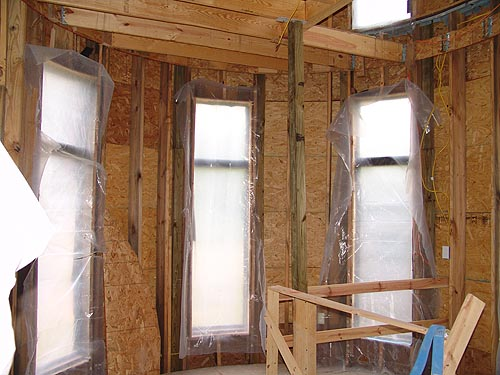

We have Stairs from
the 1st to the 2nd floor
I spent hours reading the magazine articles
and figuring up numbers
for rise and run. Then I'd go back and
find out something I forgot and
start over. First I didn't measure floor
to floor and lost 8 inches.
Then we got the 12' 2X12s for the stringers
and they were an inch short
(I fudged on that). We ended up with the
same rise and run as the
other set of stairs in the house. Bart
settled on an open staircase
he saw in a magazine, and I sat down with
my metal angle thing and
started drawing out the cut outs.
Lynn really did the work. He cut out
all the 'teeth' and got it attached to the joist on the 2nd floor. Here
he's putting down temporary steps.
The old outside of the house. We want
to have windows and no leaks (and probably insulation) before we open this
up (there'll still be columns for support).
Not that big of a space, but nicer
with the open stairs. The windows are covered so we have less chance of
breaking them.
We might reinforce the stringer
on the inside with a 2X4. For the next floor I'm looking into prices on
14' wide wood.

The second floor. We lose a lot of
floor space to the stair opening.
The view to the 3rd floor. No
stairs yet, but we're ready for them. The pipe is for the roof drain that
comes out at the bottom of the tower. Gargoyles were just so expensive.
The hatch onto the roof. We've got
a pier up there for a telescope. I think we'll build a library style ladder
to get up there.
The final steps will be wider at the
bottom and go all the way to the wall on the left hand side. That will
give it some of the feeling of roundness.